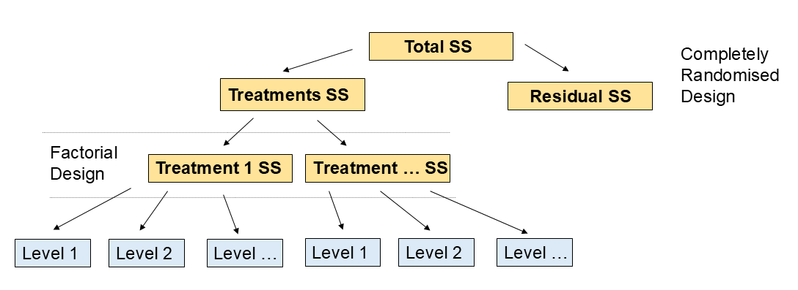
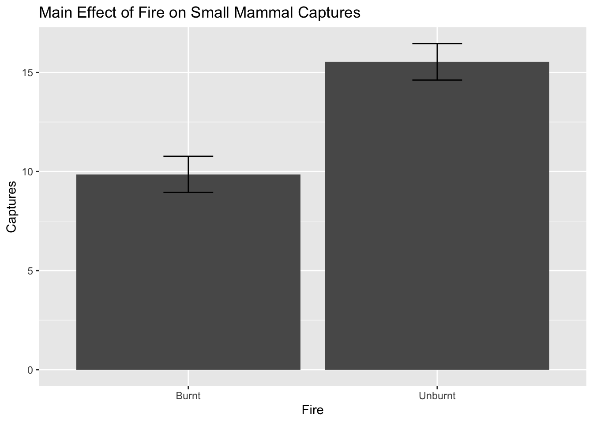
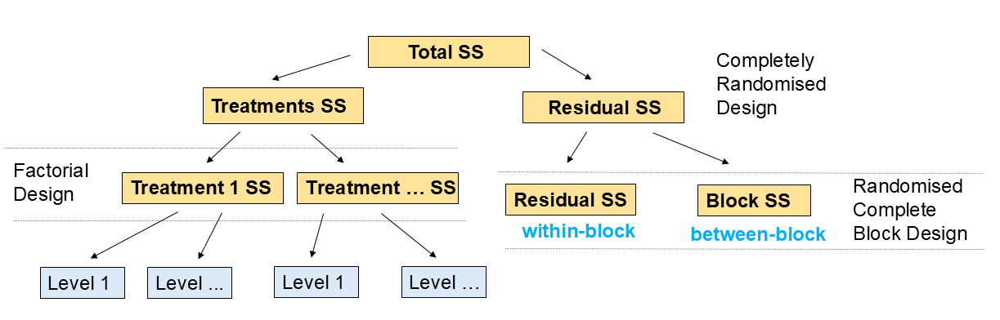
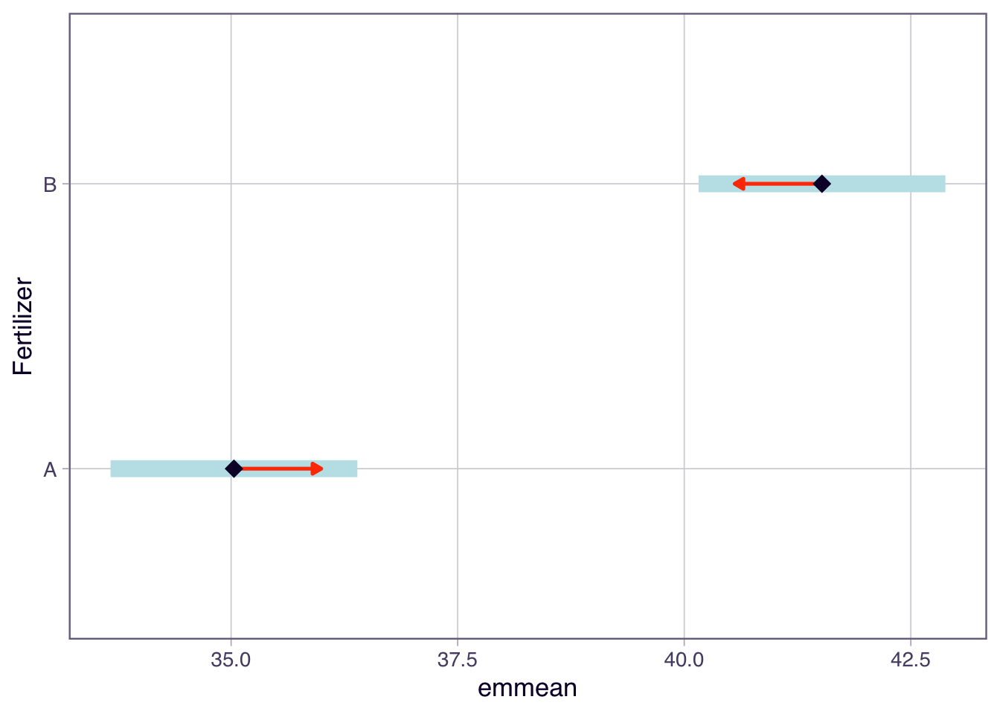
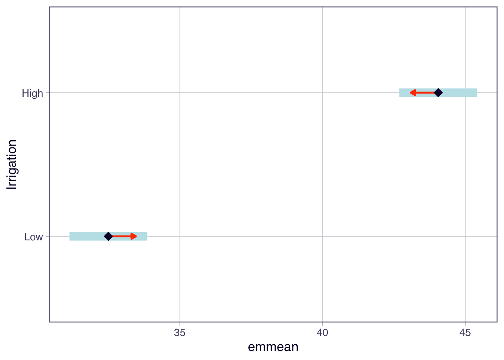
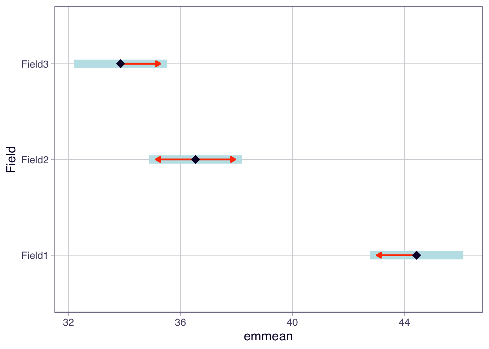
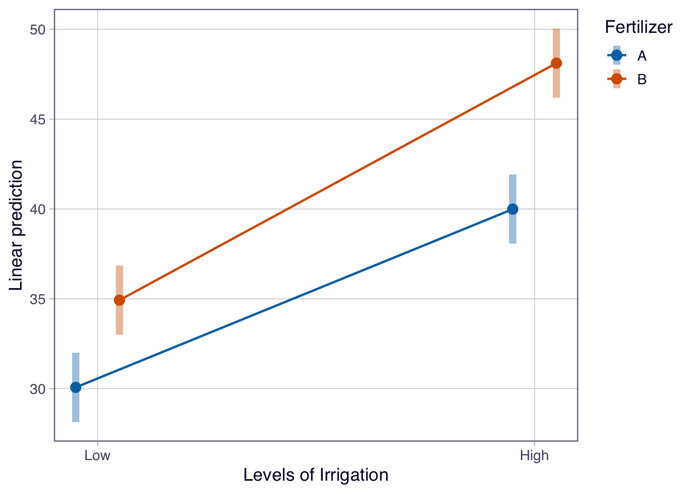

In this week’s lectures we covered factorial designs, main effects and interactions. We applied these concepts by using analysis of variance (ANOVA) as a method to analyse data from these experimental designs.
TipKey learning outcomes
Treatment Designs and Experimental Designs
Factorial Treatment Structures
Main Effects and Interactions, including graphical interpretations
ANOVA with Factorial Treatment Designs (up to 3-way designs, with and without blocking)
1 Treatment Designs and Experimental Designs
An experimental design is a structured approach to conducting experiments that allows researchers to systematically investigate the effects of one or more factors on a response variable. Treatment designs refer to the specific arrangements of treatments (or interventions) applied to experimental units within an experimental design. There are several types of treatment designs, including (but not limited to):
Completely Randomized Design (CRD): Experimental units are randomly assigned to different treatment groups without any restrictions. This design is suitable when experimental units are homogeneous.
Randomized Block Design (RBD): Experimental units are grouped into blocks based on certain characteristics, and treatments are randomly assigned within each block. This design helps control for variability among experimental units.
Factorial Design: Multiple factors are investigated simultaneously, with all possible combinations of factor levels included in the experiment. This design allows for the study of main effects and interactions between factors.
2 Factorial Treatment Structure
Factorial treatment structures involve experiments where there are two or more treatment factors, each with two or more levels. In these designs, all possible combinations of the levels of each factor are included in the experiment. For example, in a 2-way factorial design with factors A and B, where factor A has 2 levels (A1 and A2) and factor B has 3 levels (B1, B2, and B3), the treatment combinations would be A1B1, A1B2, A1B3, A2B1, A2B2, and A2B3.

Factorial designs have more than one treatment or factor. For each treatment there are two or more levels.
2.1 Main Effects and Interactions
In a factorial design, the main effects refer to the individual effects of each treatment/factor on the response variable, while interactions refer to the combined effects of two or more treatments/factors on the response variable. An interaction occurs when the effect of one treatment/factor depends on the level of another treatment/factor.
Let’s plot some examples of interaction plots:
No interaction
Positive interaction
Negative interaction
library(ggplot2)# No interactionno_interaction <-data.frame(FactorA =rep(c("A1", "A2"), each =3),FactorB =rep(c("B1", "B2", "B3"), times =2),Response =c(5, 10, 15, 7, 12, 17))ggplot(no_interaction, aes(x = FactorB, y = Response, color = FactorA, group = FactorA)) +geom_point() +geom_line() +labs(title ="No Interaction")
# Positive interactionpositive_interaction <-data.frame(FactorA =rep(c("A1", "A2"), each =3),FactorB =rep(c("B1", "B2", "B3"), times =2),Response =c(5, 10, 15, 10, 20, 30))ggplot(positive_interaction, aes(x = FactorB, y = Response, color = FactorA, group = FactorA)) +geom_point() +geom_line() +labs(title ="Positive Interaction")
# Negative interactionnegative_interaction <-data.frame(FactorA =rep(c("A1", "A2"), each =3),FactorB =rep(c("B1", "B2", "B3"), times =2),Response =c(15, 10, 5, 5, 10, 15))ggplot(negative_interaction, aes(x = FactorB, y = Response, color = FactorA, group = FactorA)) +geom_point() +geom_line() +labs(title ="Negative Interaction")
The plots above illustrate different types of interactions between two factors:
In the “No Interaction” plot, the lines are parallel, indicating that the effect of one factor does not depend on the level of the other factor.
In the “Positive Interaction” plot, the lines diverge, indicating that the effect of one factor increases with the level of the other factor.
In the “Negative Interaction” plot, the lines converge, indicating that the effect of one factor decreases with the level of the other factor.
TipInterpreting Interaction Plots
Parallel lines indicate no interaction between factors.
Non-parallel lines indicate an interaction between factors.
2.2 Exercise 1: Identifying Main Effects and Interactions
In this ecological experiment, we investigated the influence of two factors: Fire and Rainfall on small mammal captures (using a 2-way factorial design).
Our main effects are:
Effect of Fire (Levels: Burnt, Unburnt)
Effect of Rainfall (Levels: Low, Medium, High)
Our interaction is:
Interaction between Fire and Rainfall
Let’s simulate some data and plot the main effects and interactions:
set.seed(123)fire <-rep(c("Burnt", "Unburnt"), each =30)rainfall <-rep(c("Low", "Medium", "High"), times =20)captures <-rnorm(60, mean =ifelse(fire =="Burnt",ifelse(rainfall =="Low", 5,ifelse(rainfall =="Medium", 10, 15)),ifelse(rainfall =="Low", 10,ifelse(rainfall =="Medium", 15, 20))), sd =3)data <-data.frame(Fire = fire, Rainfall = rainfall, Captures = captures)# Add level order for plottingdata$Rainfall <-factor(data$Rainfall, levels =c("Low", "Medium", "High"))library(ggplot2)# Plot main effect: Rainfallggplot(data, aes(x = Rainfall, y = Captures)) +stat_summary(fun = mean, geom ="bar", aes(group =1)) +stat_summary(fun.data = mean_se, geom ="errorbar", width =0.2) +labs(title ="Main Effect of Rainfall on Small Mammal Captures")
# Plot main effect: Fireggplot(data, aes(x = Fire, y = Captures)) +stat_summary(fun = mean, geom ="bar", aes(group =1)) +stat_summary(fun.data = mean_se, geom ="errorbar", width =0.2) +labs(title ="Main Effect of Fire on Small Mammal Captures")

# Plot interactionggplot(data, aes(x = Rainfall, y = Captures, color = Fire, group = Fire)) +stat_summary(fun = mean, geom ="point") +stat_summary(fun = mean, geom ="line") +stat_summary(fun.data = mean_se, geom ="errorbar", width =0.2) +labs(title ="Interaction between Fire and Rainfall on Small Mammal Captures")
TipKey concepts
Main effects represent the individual impact of each factor on the response variable.
Interactions occur when the effect of one factor depends on the level of another factor.
If an interaction is significant, do not interpret the main effects on their own.
Read a factorial ANOVA table from the bottom up: interaction terms first, then main effects.
You must understand these concepts to correctly interpret the results of factorial experiments.
2.3 Exercise 2: ANOVA using a Factorial Treatment Design
Now that we have visualised the main effects and interaction, we can fit an ANOVA model to test for the significance of these effects.
# Fit ANOVA modeldata$Fire <-as.factor(data$Fire)data$Rainfall <-as.factor(data$Rainfall) anova_model <-aov(Captures ~ Fire * Rainfall, data = data)# Summary of ANOVA modelsummary(anova_model)
Df Sum Sq Mean Sq F value Pr(>F)
Fire 1 483.3 483.3 63.117 1.21e-10 ***
Rainfall 2 1030.1 515.0 67.259 2.19e-15 ***
Fire:Rainfall 2 16.5 8.3 1.078 0.347
Residuals 54 413.5 7.7
---
Signif. codes: 0 '***' 0.001 '**' 0.01 '*' 0.05 '.' 0.1 ' ' 1
Which effects are significant? Are they main effects and/or interactions? Are they consistent with the plots above?
# Add your answers here and check with teaching staff
3 Factorial Design with Blocking
A factorial design with blocking is an experimental design that combines the principles of factorial treatment structures with blocking techniques to control for variability in experimental units. Blocking is used to group similar experimental units together, reducing the impact of confounding variables and improving the precision of the experiment.

Factorial design with blocking. Factorial designs have more than one treatment or factor. For each treatment there are two or more levels. The experimental units are grouped into blocks based on known sources of variation, and treatments are randomly assigned within each block.
These designs have main effects and interactions as before, but also have blocking effects. You need to be able to identify these in the ANOVA table and plots.
3.1 Exercise 3: Factorial Design with Blocking
3.1) ANOVA with Blocking
In this exercise, we will simulate data for a factorial design with blocking. We will investigate the effects of two factors: Fertilizer (Levels: A, B) and Irrigation (Levels: Low, High) on crop yield, while blocking by Field (Levels: 1, 2, 3).
set.seed(456)field <-rep(c("Field1", "Field2", "Field3"), each =20)fertilizer <-rep(c("A", "B"), times =30)irrigation <-rep(c("Low", "High"), each =10, times =3)yield <-rnorm(60, mean =ifelse(fertilizer =="A",ifelse(irrigation =="Low", 30, 40),ifelse(irrigation =="Low", 35, 45)) +ifelse(field =="Field1", 5,ifelse(field =="Field2", 0, -5)), sd =4)data_blocked <-data.frame(Field = field, Fertilizer = fertilizer,Irrigation = irrigation, Yield = yield)# Add level order for plottingdata_blocked$Irrigation <-factor(data_blocked$Irrigation, levels =c("Low", "High"))data_blocked$Field <-as.factor(data_blocked$Field)data_blocked$Fertilizer <-as.factor(data_blocked$Fertilizer)data_blocked$Irrigation <-as.factor(data_blocked$Irrigation)# Fit ANOVA model with blockinganova_blocked_model <-aov(Yield ~ Field + Fertilizer * Irrigation, data = data_blocked)# Summary of ANOVA modelsummary(anova_blocked_model)
Which effects are significant? Are they main effects, interactions, or blocking effects?
# Add your answers here and check with teaching staff
3.2) Visualising Factorial Design with Blocking
Now let’s visualise the effects in this blocked factorial design using the emmeans package and its plotting functions.
library(emmeans)
Welcome to emmeans.
Caution: You lose important information if you filter this package's results.
See '? untidy'
# Calculate estimated marginal meansemm <-emmeans(anova_blocked_model, ~ Fertilizer * Irrigation)# Main effect plots using emmeansplot(emmeans(anova_blocked_model, ~ Fertilizer), main ="Main Effect of Fertilizer on Crop Yield", comparisons =TRUE)
NOTE: Results may be misleading due to involvement in interactions

plot(emmeans(anova_blocked_model, ~ Irrigation), main ="Main Effect of Irrigation on Crop Yield", comparisons =TRUE)
NOTE: Results may be misleading due to involvement in interactions

# Blocking effect plot using emmeansplot(emmeans(anova_blocked_model, ~ Field), main ="Blocking Effect of Field on Crop Yield", comparisons =TRUE)

# Interaction plot using emmeansemmip(anova_blocked_model, Fertilizer ~ Irrigation,main ="Interaction between Fertilizer and Irrigation on Crop Yield", CIs =TRUE)

Describe the main effects and interaction effects observed in the plots above. How do these visualisations help in understanding the effects of Fertilizer and Irrigation on crop yield?
# Add your answers here and check with teaching staff
Note: We usually don’t plot blocking effects as they are not of primary interest, but it can be useful to check for large differences between blocks.
Depending on our hypotheses, we may be interested in post-hoc tests for the main effects or interaction effects. If there is a significant interaction, we should focus on that rather than the main effects. We may not need to use all the plots. Always let your hypotheses guide what plots to produce.
3.3) Calculate the variance explained by each effect
Which effect explains the most variance in crop yield? How does this information help in understanding the factors influencing crop yield?
# Add your answers here and check with teaching staff
4 Summary
In this tutorial, we explored factorial designs and their analysis using ANOVA. We learned about main effects, interactions, and blocking effects, and how to interpret ANOVA results in the context of factorial experiments. We also visualised these effects using ggplot2 and emmeans, enhancing our understanding of the relationships between factors and response variables in experimental designs.
4.1 Example exam questions
In a 2-way factorial design with factors A (2 levels) and B (3 levels), describe how you would identify and interpret main effects and interactions using ANOVA. Provide an example of how to visualise these effects.
Explain the difference between a treatment design and an experimental design. Provide examples of each and discuss how they can be combined in a factorial design with blocking.
If you conducted a factorial experiment with blocking and found a significant interaction between two factors, how would you interpret this result? Would you still consider the main effects of each factor? Justify your answer with reference to ANOVA principles.